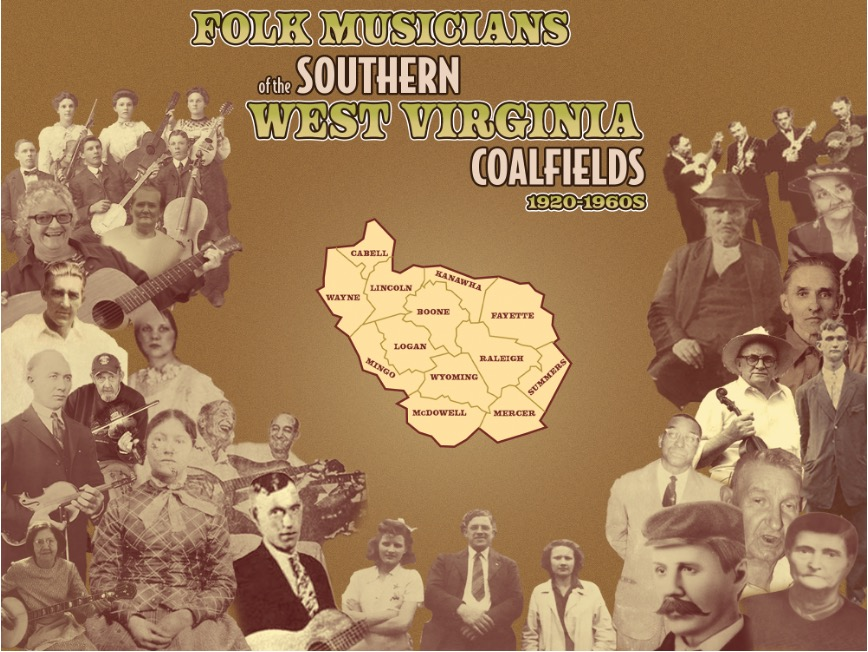
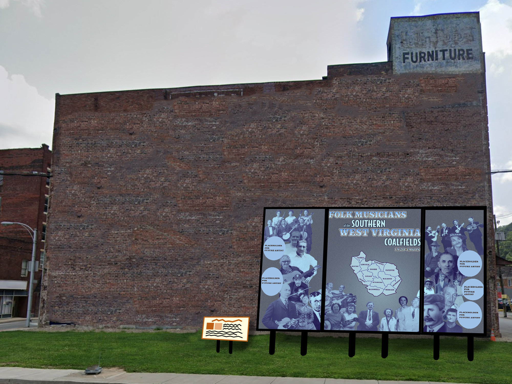
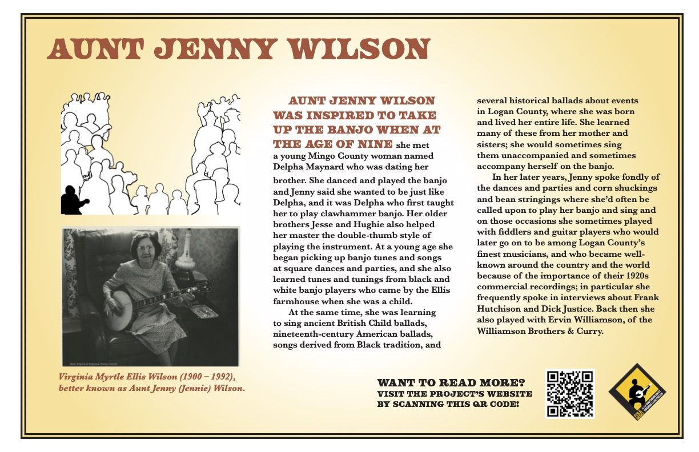
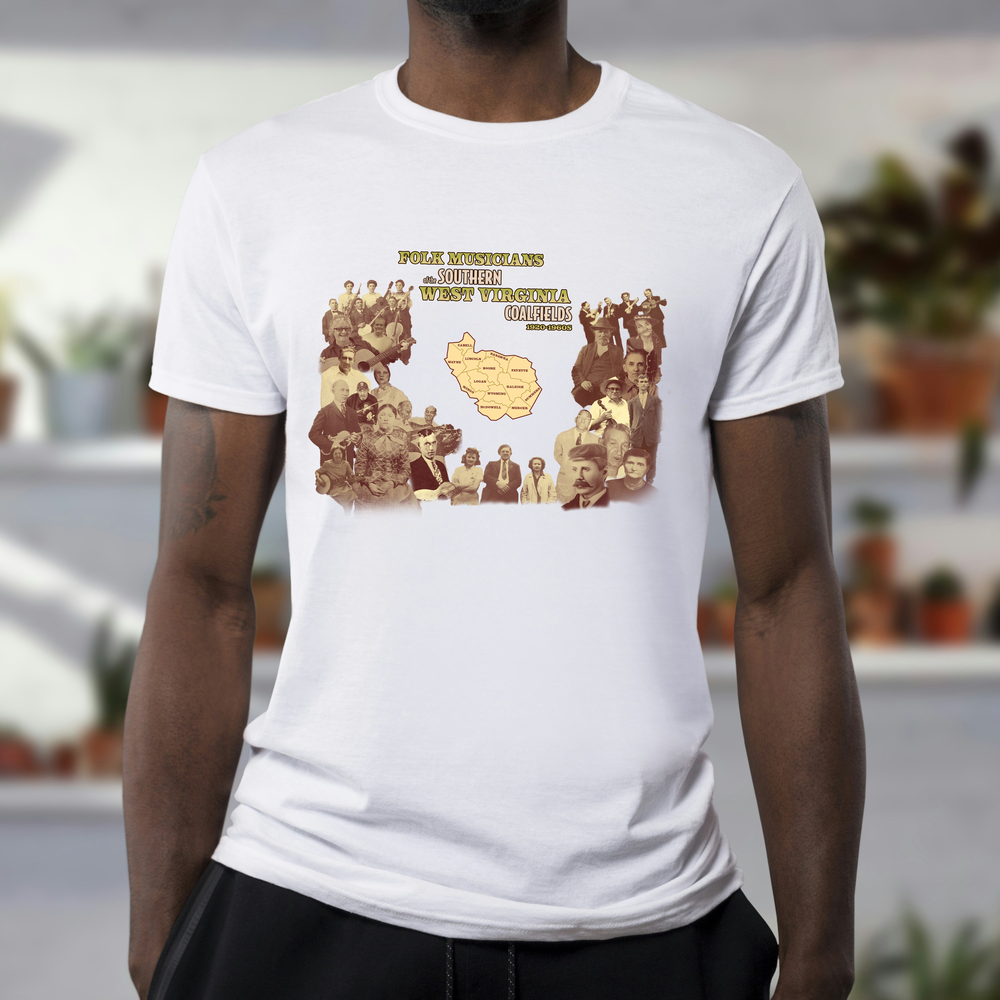

Folk Musicians of the Southern West Virginia Coalfields Mural
- Medium: Mural and Merchandise
- Date: Spring 2024
- Programs Used: Adobe Photoshop, Indesign
The Folk Musicians of the Southern West Virginia Coalfields project is a project concerning bringing awareness to the historic folk musicians of the southern West Virginia areas. As a musician myself, these works resonated deeply with me and in turn have inspired great passion for my home area. As a McDowell County resident, being able to assist in immortalizing these musicians felt very much like a full circle moment for me as a designer.
By using supplied photographs of various musicians. I created a mural design where the musicians surround a map of the counties involved in the project. In theory this mural will be viewed from far distances, so ensuring all of the information can be digested while still upholding chosen aesthetics served as an exciting challenge for myself. This design comes in a multitude of color palettes including sepia tones to bright blues and violets.
By using supplied photographs of various musicians. I created a mural design where the musicians surround a map of the counties involved in the project. In theory this mural will be viewed from far distances, so ensuring all of the information can be digested while still upholding chosen aesthetics served as an exciting challenge for myself. This design comes in a multitude of color palettes including sepia tones to bright blues and violets.
To encourage viewers to learn more about the selected musicians, informational signs and plaques were conceived. Here a legend was made to easily spot where the musician is on the mural. Additionally, a short biographic selection of text gives the audience a quick glance into the lives of these musicians. At the bottom, viewers are encouraged to scan the QR code to lead them to the project's main website so that they can learn the most about a certian musician or learn about others.
To extend the project futher, a logo usignthe silhouette of featured musician Aunt Jenny Wilson to tie back to musicial roots. The color choice and diamond shape were inspired by the National Coal Heritage Area as it is closely tied to this project. With the logo, various merchandise samples were created using the design on t-shirts, hats, and cellphone cases.

One final note of trivia to end on is that the two women and man at the center of the mural are my relatives! My great-grandfather William England and his two daughters were respective folk gospel musicians that often wrote their own songs. It was such an honor to be ale to include them into this project.